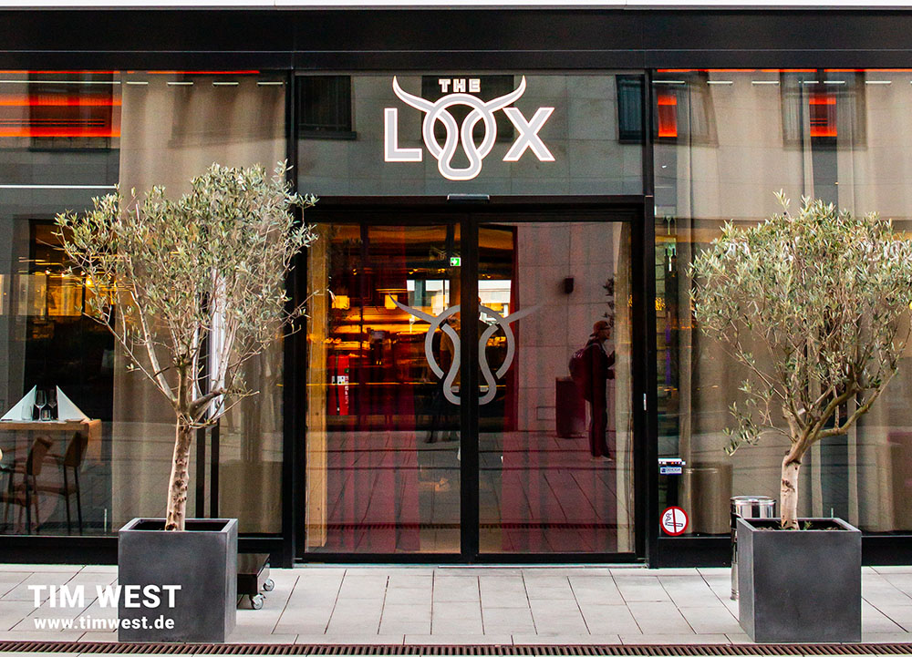

Restaurants in Düsseldorf
La Copita
La Copita steht für die Urigkeit und Quirligkeit Spaniens. Die Tapas-Bar in Pempelfort ist immer gut besucht, überzeugt mit einer außergewöhnlichen Herzlichkeit inmitten eines typisch spanischen, vielleicht auch ein wenig kitschigen Einrichtungsstils. Die Karte hält vielfältige, traditionell zubereitete und regionale Tapas Andalusiens bereit. Kaum bestellt, stehen die kleinen Köstlichkeiten schon auf dem Tisch. Aber lass dich davon nicht beirren und genieße in Ruhe die typischen Datteln im Speckmantel, die frittierten Sardinen – Boquerones –, die Hähnchenleber oder die hervorragenden Wachteln vom Grill. Natürlich gibt es auch eine große Auswahl an vegetarischen Tapas, die jeden Spanien-Fan überzeugt. Für das ultimative Spanien-Feeling solltest du dazu deinen Strohhalm genussvoll in ein Glas Sangria halten.
La Copita | Nordstraße 52 | 40477 Düsseldorf

Dritan Arsela Coffee
Wenn ich richtig guten Kaffee trinken will, dann gehe ich zu Dritan Alsela Coffee. Hier wird die italienische Caffè-Kultur von erfahrenen Barista leidenschaftlich zelebriert.Die Location auf der Schlüterstraße ist modern aber gemütlich. Tiefe Sofabänke und massive Holztische gehören zur Einrichtung, alte Espressomaschinen dienen der Deko Ob Spaghetti Carbonara, Club-Sandwich oder Salatteller – hier finde ich immer etwas, was mir schmeckt. Die Portionen sind reichlich, das Essen immer lecker. Das gilt übrigens auch für das Frühstück. Vom simplen Croissant über Joghurt mit frischen Früchten, Honig und Nüssen oder Müsli bis zu köstlichen thematischen Frühstücksangeboten mit unterschiedlichen Backwaren, Aufschnitten und Eiern, es gibt Nichts, was es nicht gibt
Dritan Alsela Coffee | Schlüterstr. 3a | 40235 Düsseldorf

The Lox
Die alte, traditionelle Rinderrasse der „Schwarzbunten“ ist bereits seit dem 16. Jahrhundert in Pommern beheimatet. Für „The Lox“ werden nur die besten und edelsten Rinder ausgewählt. Es zeichnet sich durch einen natürlichen und einzigartigen Fleischgeschmack mit feiner Fett Marmorierung aus. Das vollmundige Geschmackserlebnis wird durch traditionell, handwerksgerechte Verarbeitung durch eine mehrwöchige Trockenreifung am Knochen erzielt.Im „The Lox“ erwartet Sie eine Auswahl an Weinen, die aus Weinbaugebieten verschiedenster Regionen der Welt stammen. Juwelen der alten und neuen Welt, wenig bekannte Labels von Familienbetriebenen Winzern. skin care Unsere gefeierten, trocken gereiften Steaks verdienen nichts Geringeres als eine optimal abgestimmte Weinkarte.
the lox | Theo-Champion-Str. 2 | 40549 Düsseldorf
Nine O Five
auch im Nine O Five gibt es Pizza nur original neapolitanisch – aber mit jeder Menge kreativem Pfiff. Der Teig ruht 72 Stunden, kommt saftig und heiß aus dem Holzkohleofen und wird belegt mit ausgesuchten nachhaltigen Zutaten. Alle Zutaten – von 24 Monate gereiftem Parmesan über saftigem Parmaschinken bis Slowfood Olivenöl aus Kampanien – werden transparent nach Herkunftsland aufgelistet. Ob Avocado-Basilikumguacamole, Rucola, Kreuzkümmel und Süßkartoffelchips oder Thunfisch Sashimi, Baby-Spinat und Ingwer-Sesam – die Beläge könnten kreativer nicht sein. Am besten heiß genießen wenn möglich!
Nine O Five | Ackerstraße 181 | 40235 Düsseldorf | Delivery & Take away